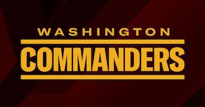

The Washington Commanders are a football team located in washington DC. They were founded in 1932 as the "Boston Braves", but they move to Washington D.C. in 1937 amd changed their name to the "Redskins". They kept this name until 2020, when they changed their name temporarily to the "Washington Football Team" , and the finally in 2021 they changed their name to the "Washinton Commanders".
 Home Page